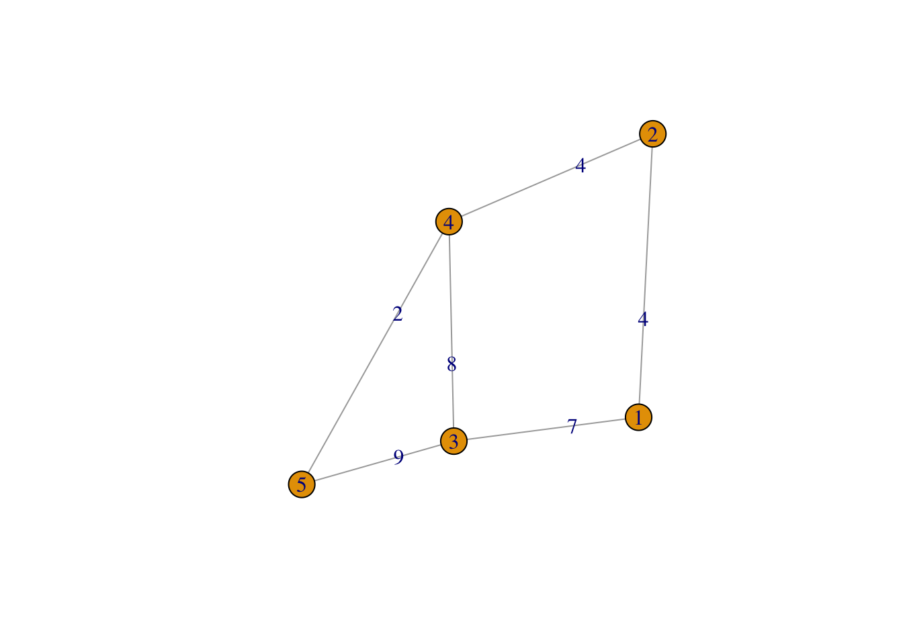
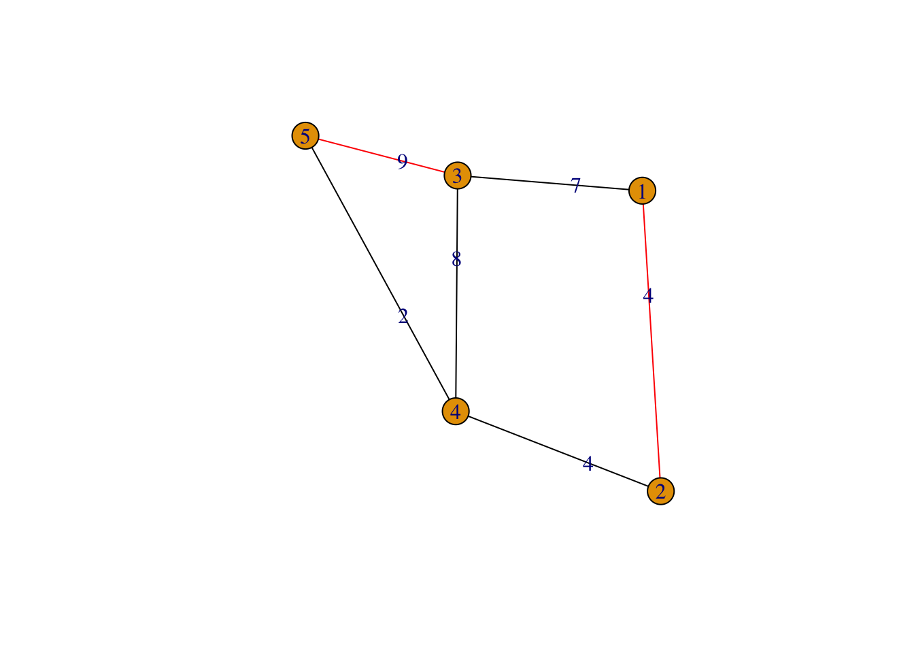

Chapter 4 Graph Problems
4.1 Maximum weight matching
4.1.1 Introduction and Setting
To quote Wikipedia:
In computer science, the maximum weight matching problem is the problem of finding, in a weighted graph, a matching in which the sum of weights is maximized.
Our setting is a weighted, undirected graph \(G=(V,E)\) and we are interested in finding a subset of edges such that the set is a matching (i.e. no two edges share the same vertex) and the sum of the weights is maximal.
We will use the igraph package to construct a sample graph:
library(igraph)
set.seed(123)
graph <- make_graph("House")
E(graph)$weight <- rpois(ecount(graph), lambda = 5)
plot(graph, edge.label = E(graph)$weight)
4.1.2 The model and solution
library(rmpk)
library(ROI.plugin.glpk)
# we start with an empty model and GLPK as the solver
# TODO: cite a good book/paper regarding the problem and add a proper latex description of the problem
# In the meatime, please refer to https://www.arl.wustl.edu/~jst/cse/542/text/sec15.pdf
# or https://cs.stackexchange.com/questions/104017/maximum-matching-using-linear-programming
# for more information/references
model <- optimization_model(ROI_optimizer("glpk", control = list(verbose = TRUE)))
# for each edge we define a 0-1 variable that indicates if the edge is part
# of the matching or not.
x <- model$add_variable("x", edge = E(graph), type = "binary")
# now we maximise the sum of the weight of all selected edges
weight <- E(graph)$weight
model$set_objective(
sum_expr(weight[edge] * x[edge], edge = E(graph)),
sense = "max"
)
# at last we need to make sure that each vertex is only connected to at most
# 1 edge. I.e. the sum of selected edges incident to a given vertex cannot be
# larger than 1.
model$add_constraint(
sum_expr(x[edge], edge = incident(graph, vertex)) <= 1,
vertex = V(graph)
)
model$optimize()## <SOLVER MSG> ----
## GLPK Simplex Optimizer, v4.65
## 5 rows, 6 columns, 12 non-zeros
## * 0: obj = -0.000000000e+00 inf = 0.000e+00 (6)
## * 6: obj = 1.350000000e+01 inf = 0.000e+00 (0)
## OPTIMAL LP SOLUTION FOUND
## GLPK Integer Optimizer, v4.65
## 5 rows, 6 columns, 12 non-zeros
## 6 integer variables, all of which are binary
## Integer optimization begins...
## Long-step dual simplex will be used
## + 6: mip = not found yet <= +inf (1; 0)
## + 7: >>>>> 1.300000000e+01 <= 1.300000000e+01 0.0% (2; 0)
## + 7: mip = 1.300000000e+01 <= tree is empty 0.0% (0; 3)
## INTEGER OPTIMAL SOLUTION FOUND
## <!SOLVER MSG> ----(solution <- model$get_variable_value(x[edge]))## name edge value
## 1 x 1 1
## 2 x 3 0
## 3 x 5 1
## 4 x 4 0
## 5 x 2 0
## 6 x 6 0And now we can plot the provable, optimal solution with objective value 13:
selected_edges <- solution[solution$value == 1, ]$edge
color <- rep.int("black", ecount(graph))
color[selected_edges] <- "red"
E(graph)$color <- color
plot(graph, edge.label = E(graph)$weight)